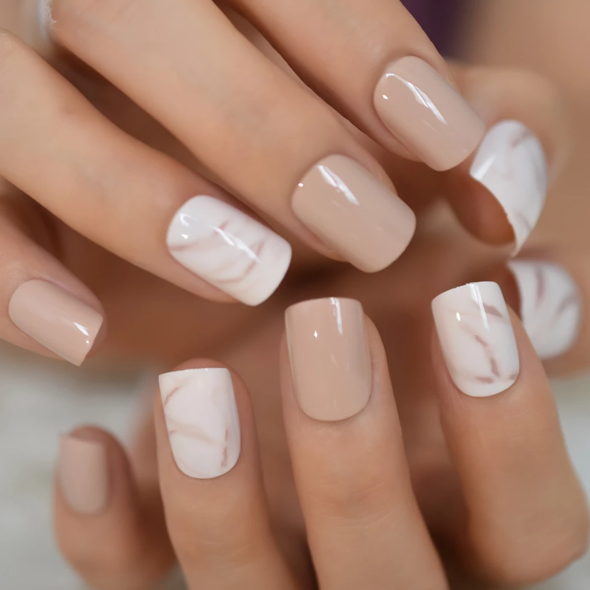
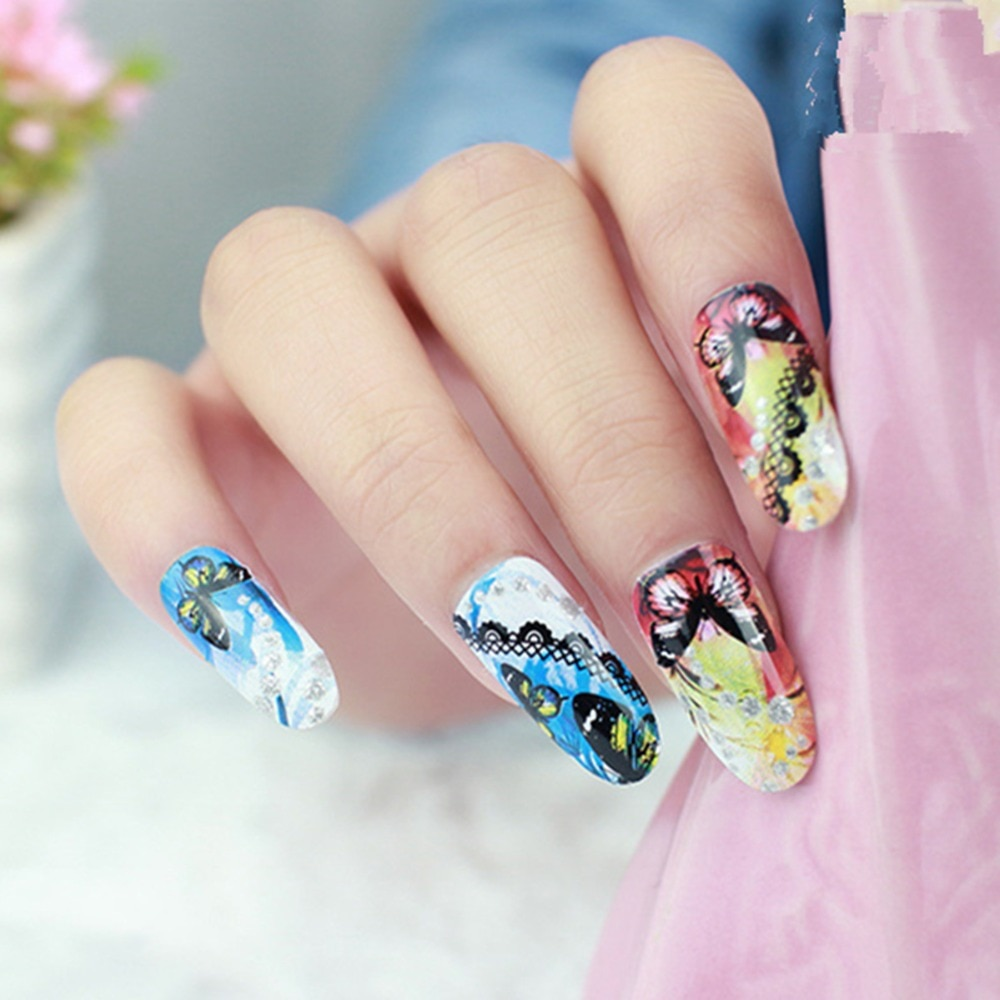

Novosti


Kratki nokti
Kratki nokti odlično izgledaju u kombinaciji s neutralnom crnom, bijelom i bež bojom, naravno i s klasičnom crvenom, a poigrati se možete i s pastelnim tonovima.

Nokti u duginim bojama
Nokti u duginim bojama mogu se nositi na različite načine – od bojanja svakog nokta u drugu boju do raznobojnih mikro-manikura ili negative space manikura.

Cvijetni uzorak na noktima
Manikure s tratinčicama mogu biti vrlo jednostavne, ali i obojane i upečatljive. Isto tako, možete ih isprobati na nude bazi za umjetničku, negative space vibru.